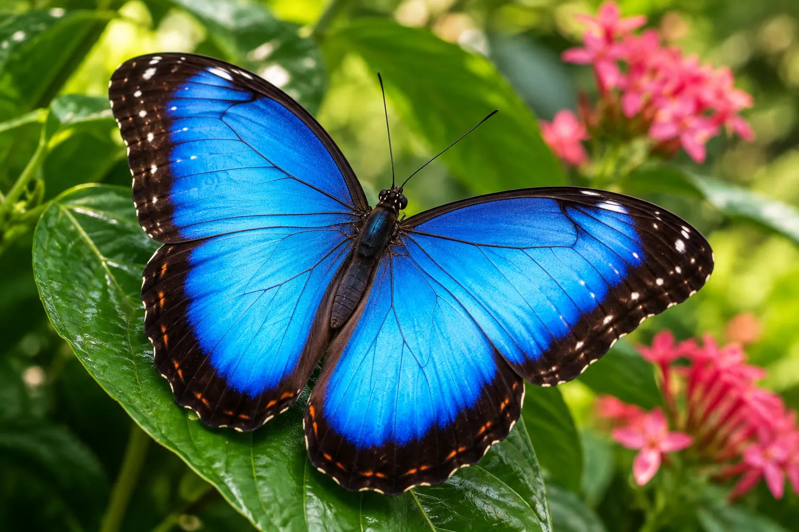
01Blue Morpho
Famous for brilliant blue wings that appear to shimmer as the butterfly moves through light. Native to tropical forests, the Blue Morpho is a stunning example of nature's iridescent beauty.
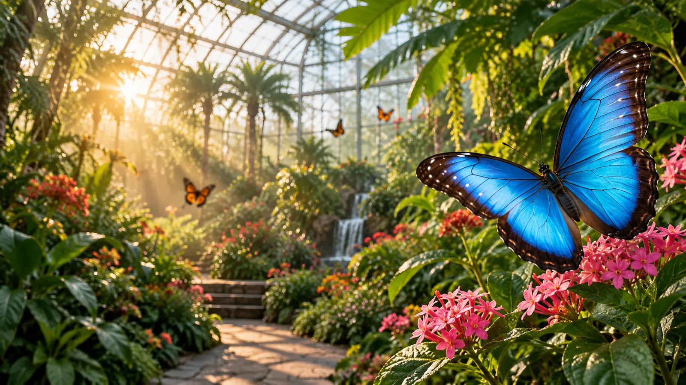
DISCOVER THEIR WORLD
Step into the fascinating world of butterflies and discover the colours, patterns, behaviours and remarkable transformations that make every species unique.
MEET THE BUTTERFLIES
Butterflies are far more than beautiful visitors. Every species has its own way of flying, feeding, resting and responding to the environment around it.
At Wing & Bloom, the conservatory gives visitors an opportunity to observe these details at a gentle pace and experience butterflies from surprisingly close distances.
SPECIES SPOTLIGHT
Look closely and you'll begin to notice how different each butterfly can be — from bold colours and dramatic markings to subtle patterns designed for camouflage.

01Famous for brilliant blue wings that appear to shimmer as the butterfly moves through light. Native to tropical forests, the Blue Morpho is a stunning example of nature's iridescent beauty.
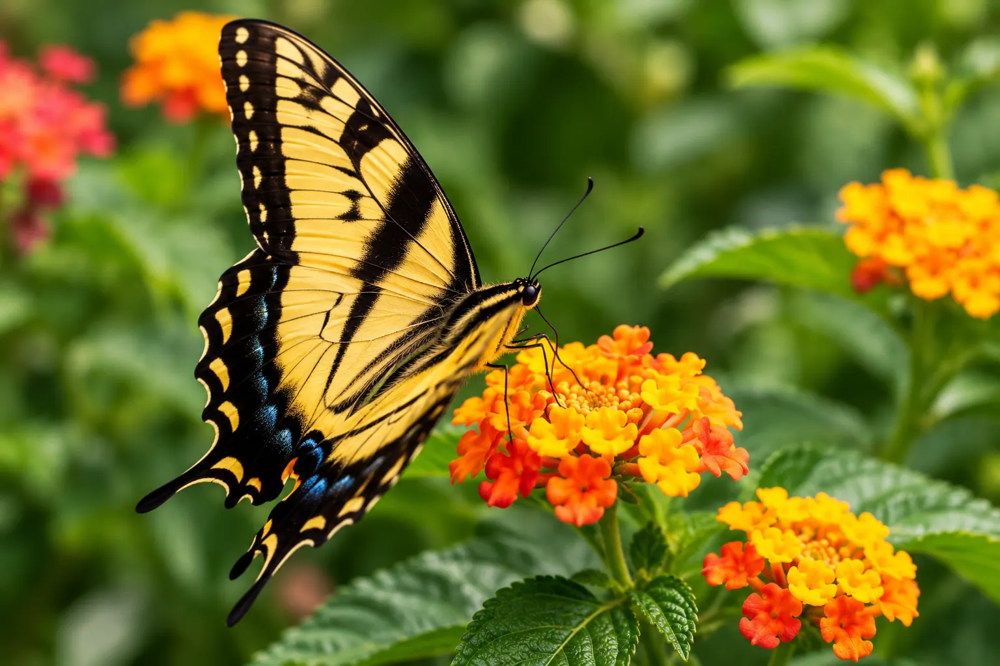
02Recognised by elegant wing shapes and distinctive tail-like extensions on the hindwings. Swallowtails are known for graceful flight and vibrant patterns found across gardens and woodlands.
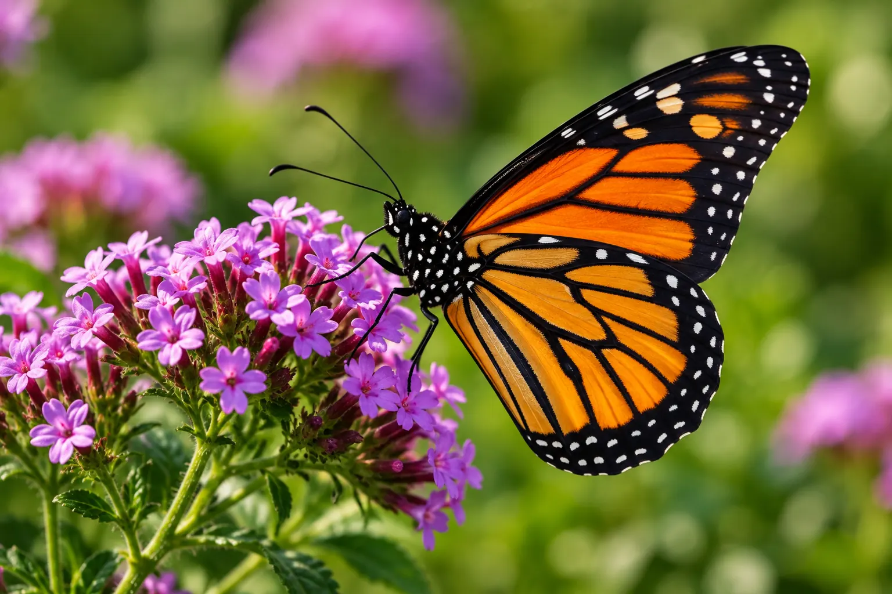
03Known for striking orange and black markings and one of nature's most recognisable wing patterns. Monarchs are also famous for remarkable long-distance seasonal migrations.
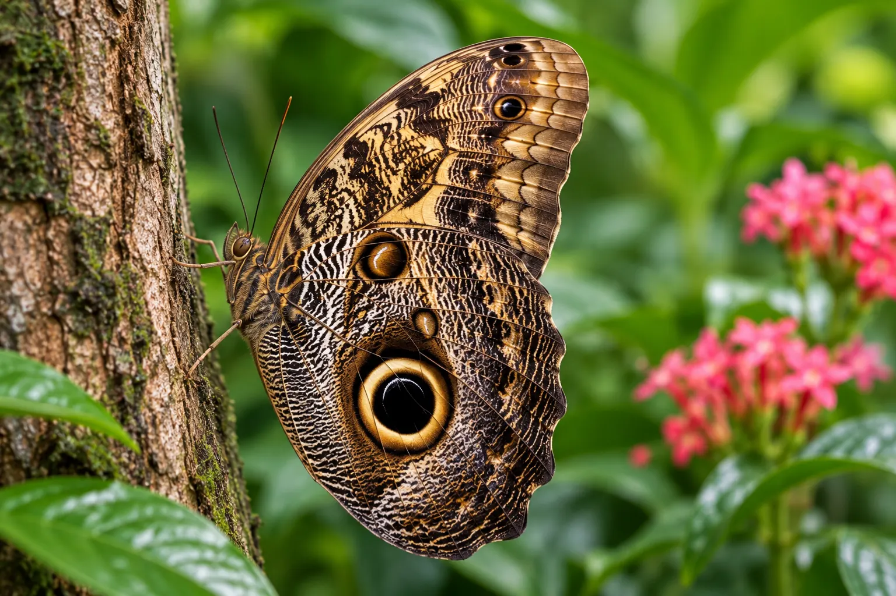
04Large circular markings on the wings resemble the eyes of an owl, helping confuse potential predators. Their impressive wings make them especially striking when resting among tropical foliage.
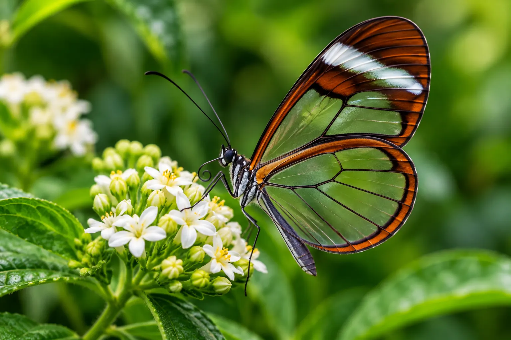
05Transparent sections of the wings allow light and surrounding colours to appear through them. Their delicate appearance provides remarkable camouflage while moving through dense vegetation.
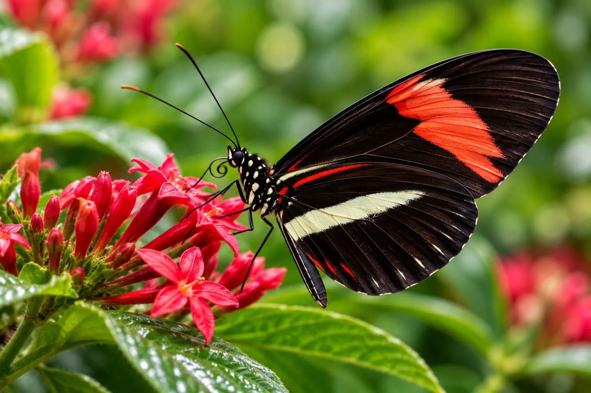
06Long narrow wings create a graceful silhouette and distinctive appearance in flight. These colourful butterflies often move gently between tropical flowers while searching for nectar.
LOOK CLOSER
A butterfly may appear delicate, but every part of its body plays an important role in helping it sense, feed, balance and move through its environment.
Help butterflies sense their surroundings and detect important environmental cues.
Provide a broad view of the world and help detect colour, light and movement.
A long feeding tube that can uncoil when the butterfly drinks nectar.
Thousands of tiny scales contribute to the colours and patterns we see on the wings.

THE LIFE CYCLE
The butterfly life cycle is one of nature's most extraordinary transformations, changing completely from one stage to the next.

The journey begins with a tiny egg, usually placed carefully on a suitable plant.

The larva emerges and focuses on feeding and growing before its next transformation.

Inside the protective chrysalis, an extraordinary transformation takes place.
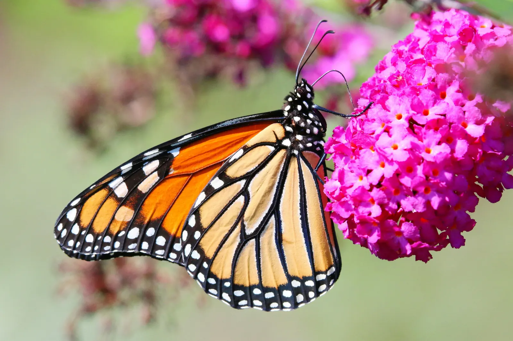
The adult emerges, expands its wings and begins the next chapter of its life.
A LIVING HABITAT
A butterfly-friendly habitat is more than a beautiful collection of flowers. It provides food, shelter, warmth and suitable plants for different stages of life.
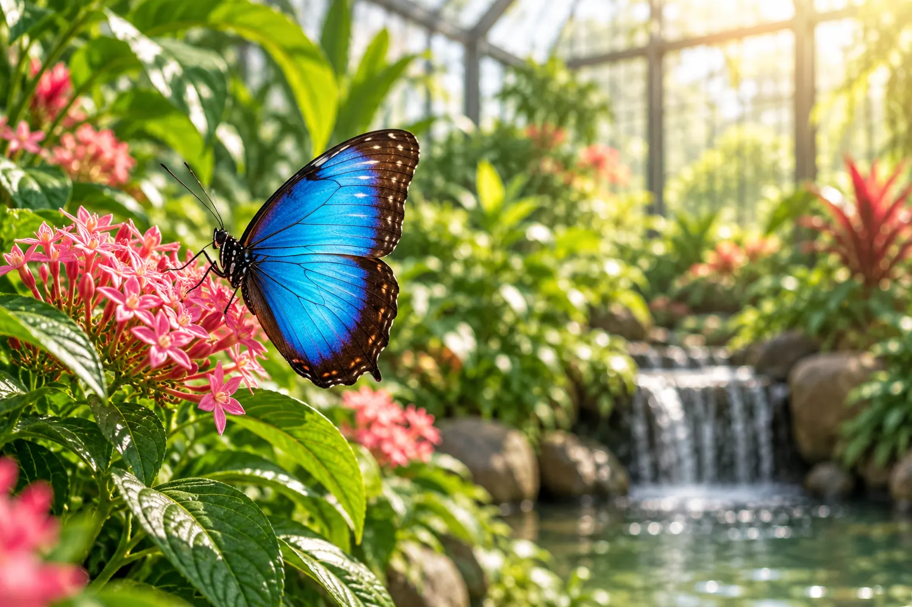
A warm and humid environment supports many tropical butterfly species.
Butterflies rely on external warmth to become active and ready for flight.
Particular plants provide important places for eggs and developing caterpillars.
Flowering plants provide nectar and encourage natural feeding behaviour.
DID YOU KNOW?
Butterflies have sensory receptors on their feet that help them investigate the plants they land on.
Butterflies depend on environmental warmth because they cannot regulate body temperature in the same way mammals do.
Their compound eyes allow them to detect a wide field of movement and visual information.
The powder-like material on butterfly wings is made from thousands of microscopic scales.
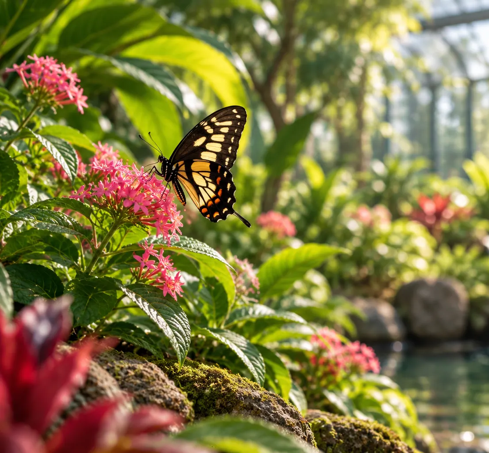
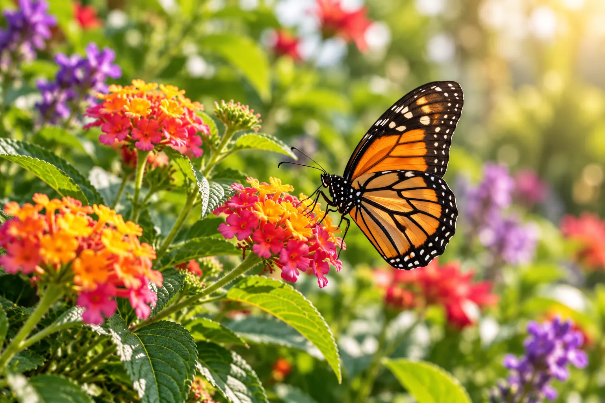
CONSERVATION
Butterflies depend on healthy plant communities, suitable host plants and connected habitats. Protecting those environments benefits much more than butterflies alone.
Plant For Pollinators Grow nectar-rich and suitable host plants where possible.
Protect Natural Spaces Healthy green spaces provide food, shelter and breeding habitat.
Observe Without Disturbing Enjoy butterflies gently and avoid handling or interrupting natural behaviour.
EXPERIENCE THE CONSERVATORY
Walk among colourful butterflies and discover the quiet beauty of Wing & Bloom for yourself.